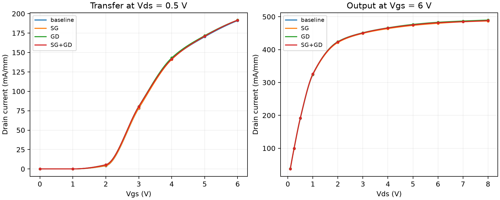
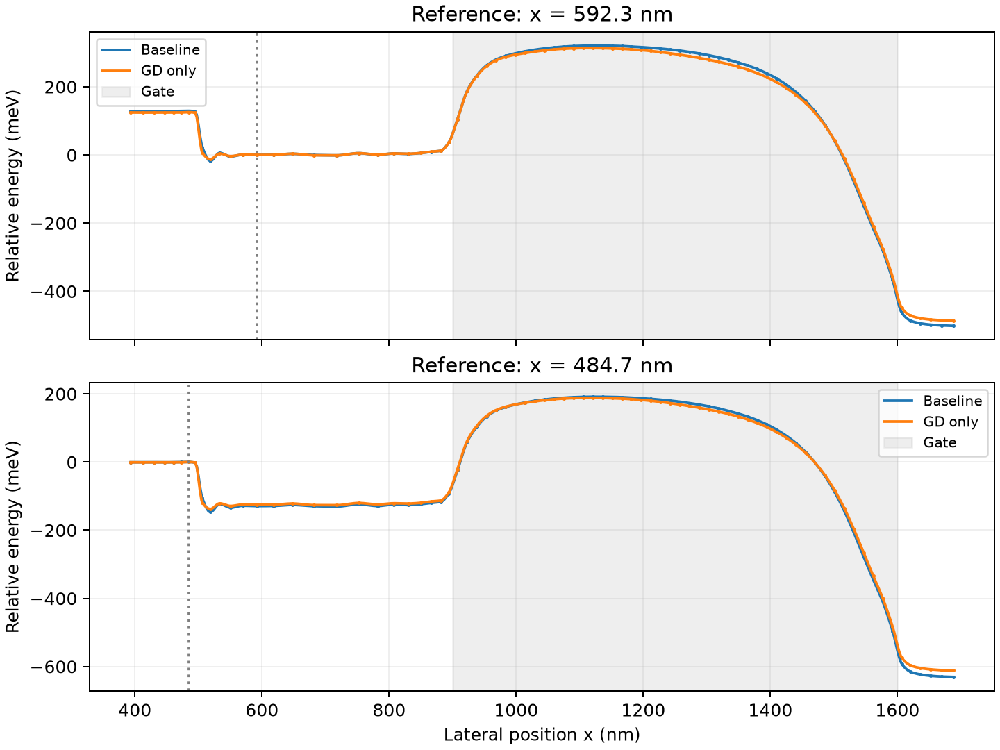

핵심 결과
SG와 GD의 SiN/AlGaN 계면에 균일한 고정 음전하를 추가하고 정상상태 특성의 변화를 비교했습니다. Gate AlGaN Charge에서 Gate 아래에 넣었던 것과 같은 면밀도 10¹² cm⁻²를 이번에는 접근 영역 표면에 배치한 후속 비교입니다.
- 강한 ON 상태: 같은 Vgs에서 8 V 전류 변화는 0.31% 이내, 겉보기 ON 저항 변화는 약 1.1% 이내로 작습니다.
- 문턱: GD에 전하를 넣은 두 조건(GD, SG+GD)에서만 5 mA/mm 기준 문턱전압이 약 27–28 mV 낮아집니다. SG 단독은 −0.5 mV로 변화가 없습니다.
- 채널 밀도: 대전한 영역 아래의 전자 면밀도가 약 7% 줄지만, Gate 아래 평균 밀도는 거의 변하지 않습니다.
- 해석 범위: GD 조건에서 문턱 부근 전류가 늘었다는 관측은 유지하지만, 그 원인을 Source 주입 장벽 저하로 확정하지는 않습니다.
비교 방법
SG는 Source–Gate 사이 400 nm, GD는 Gate–Drain 사이 1,225 nm입니다. 대전한 영역마다 전자 수로 환산한 면밀도 10¹² cm⁻²의 음전하를 AlGaN 쪽 첫 1.5 nm 셀에 넣었습니다. 따라서 GD 단독의 총 추가 전하는 SG 단독의 3.06배입니다. Gate 아래에는 기존 분극을 유지했습니다. 고정전하는 Poisson 방정식에 반영했고 이동 입자 총량은 고정했습니다.
네 조건(추가 전하 없음, SG, GD, SG+GD)은 같은 저장 상태에서 시작했습니다. 자가발열과 정공 hard wall을 적용하고, 조건별 30개 전압에서 안정화·정밀도 기준을 충족한 뒤 평균 전류를 비교했습니다. 대조군은 이번에 새로 계산한 추가 전하가 없는 조건입니다.
전류 특성
| 추가 음전하 | 문턱전압 (V) | 기준 대비 이동 (mV) | 겉보기 ON 저항 (Ω·mm) | 8 V 전류 (mA/mm) |
|---|---|---|---|---|
| 없음 | 2.0153 | — | 2.625 | 488.46 |
| SG | 2.0148 | −0.5 | 2.597 | 486.98 |
| GD | 1.9870 | −28.3 | 2.621 | 489.77 |
| SG+GD | 1.9886 | −26.7 | 2.597 | 488.01 |
문턱은 Vds = 0.5 V에서 5 mA/mm 교차점을 선형 보간했습니다. ON 저항은 Vgs = 6 V에서 Vds = 0.10, 0.25, 0.50 V의 전류 기울기로 구했습니다. 같은 Vgs에서 8 V 전류 변화는 0.31% 이내, 겉보기 ON 저항 변화는 약 1.1% 이내였습니다. 8 V 전류 평균의 개별 블록 표준오차는 0.25–0.28 mA/mm입니다. 이 값은 조건 간 차이의 전체 불확실성을 나타내지 않습니다.


문턱 부근의 국소 변화
Vgs = 2.00 V, Vds = 0.5 V에서 동일한 1 V 간격 하향 스윕을 비교하면 전류는 기준 4.11, SG 4.28, GD 5.51, SG+GD 5.34 mA/mm였습니다. 각 평균의 블록 표준오차는 0.16–0.21 mA/mm였습니다. GD를 대전한 두 조건에서만 평균 전류가 5 mA/mm를 넘었습니다.
각 조건의 최종 문턱 추출에 쓰인 2.00 V 자료로 채널 밀도도 확인했습니다. 각 영역에서 GaN 채널 상단 10 nm(z = 116–126 nm)의 전자 밀도를 깊이 적분하고, 가로 길이와 최종 평균 구간에 걸쳐 평균했습니다. 아래 값의 단위는 10¹² cm⁻²입니다. 이 표는 기준·SG에서 0.05 V 세부 스윕, GD·SG+GD에서 1 V 스윕 자료를 사용하므로 동일 바이어스에서도 직전 전압 이력이 다릅니다.
| 추가 음전하 | SG 아래 | Gate 아래 | GD 아래 |
|---|---|---|---|
| 없음 | 10.592 | 0.2493 | 10.915 |
| SG | 9.876 | 0.2402 | 10.920 |
| GD | 10.615 | 0.2489 | 10.147 |
| SG+GD | 9.899 | 0.2382 | 10.152 |
SG 단독에서는 SG 아래 면밀도가 약 6.8%, GD 단독에서는 GD 아래 면밀도가 약 7.0% 줄었습니다. GD 단독에서 문턱 부근 전류가 늘었지만 Gate 아래의 평균 면밀도는 기준과 거의 같았습니다. Gate 전체의 평균 밀도만으로 문턱 이동의 원인을 설명하기는 어렵습니다.
Source에서 Gate로 접근할 때의 전도대 변화
동일한 1 V 간격 하향 스윕에서 Vgs = 2.00 V, Vds = 0.5 V의 최종 전류 평균 구간에 저장한 전위를 사용했습니다. 각 2,000 step 블록의 후반 1,000 step 전위를 평균하고, GaN 상단 116–126 nm에서 격자 두께로 가중 평균했습니다. 균일한 GaN 안에서 전도대의 정전기 성분은 −qφ이므로 두 위치의 전위차로 상대 에너지를 구했습니다. 아래 최고점은 Gate 구간(900–1,600 nm)의 계산 격자에서 읽었습니다.


| 에너지 기준 위치 | 기준 조건의 Gate 최고점 (meV) | GD 단독 (meV) | GD − 기준 (meV) |
|---|---|---|---|
| SG 내부 x = 592.3 nm | 320.67 | 313.57 | −7.10 |
| Source 전극 아래 GaN x = 484.7 nm | 191.43 | 188.18 | −3.25 |
두 기준에서 모두 GD 대전 후 상대 높이가 낮아졌습니다. Source 아래에서는 121 nm까지 내려온 금속 셀을 제외하여 121.7–124.9 nm의 GaN 셀 중심 세 곳만 반영했으므로, 두 기준에서 깊이 평균의 유효 범위가 다릅니다. 수 meV의 감소는 전류 증가 방향과 정성적으로 일치합니다. 최고점 위치는 기준 x = 1,120.7 nm, GD 단독 x = 1,105.4 nm로 한 격자만큼 달랐습니다.
두 기준점 모두 채널의 국소 전도대 에너지이며 Source의 전자 준페르미 준위를 측정한 값은 아닙니다. 따라서 GD 조건에서 문턱 부근 전류가 증가했다는 관측은 유지하되, 그 원인을 Source 주입 장벽 저하로 확정하기는 어렵습니다. 이 비교는 한 계산 이력의 시간 평균입니다.
실험 문헌과 해석 범위
[1] Danesin 등은 SiC 기판 HEMT의 고온 보관 실험에서 DC 문턱 이동을 관측하지 않았지만, 펄스 측정에서는 뚜렷한 전류 붕괴를 보고했고 이를 SG·GD 접근 영역 표면 트랩과 연결했습니다. 장시간 열화에서 DC 포화전류도 20% 감소해, DC 변화의 크기 자체는 이번 계산과 다릅니다. Microelectronics Reliability (2008)
[2] Wu 등의 p-GaN HEMT에서는 650 V, 10 ms 스트레스 후 동적/정적 ON 저항비가 기존 소자에서 4.30, GD 측 능동 패시베이션 소자에서 1.39였습니다. 이는 고전압 스트레스 후 측정 결과입니다. 이번 계산은 고정된 전하 분포 아래 최대 8 V의 준정적 응답을 다루므로 이 동적 저항비와 직접 비교할 수 없습니다. IEEE Electron Device Letters
[3] Catoggio 등의 RF HEMT 모델은 장벽/패시베이션 계면에 −2 × 10¹² cm⁻²의 고정전하를 적용했습니다. 전하 부호와 크기를 선정하는 참고 사례이며, 이번 SG·GD별 전류 변화율의 실험 검증은 아닙니다. Electronics (2023)
데이터
전압 조건별 전류와 블록 표준오차 · 채널 상대 에너지 분포 (meV, x = 592.3 nm 기준)
후속으로 전하량을 2×10¹²–10¹³ cm⁻²로 키운 비교는 SG·GD Charge Dose에 정리했습니다.